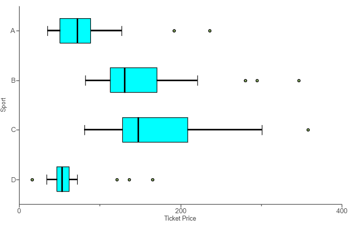
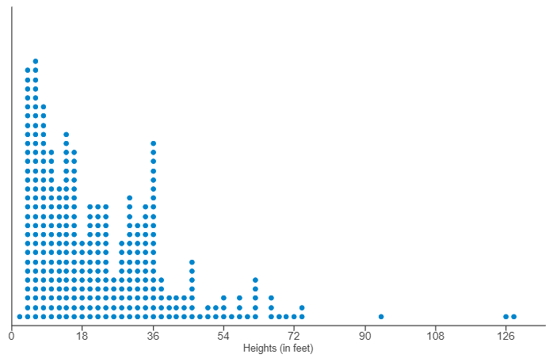
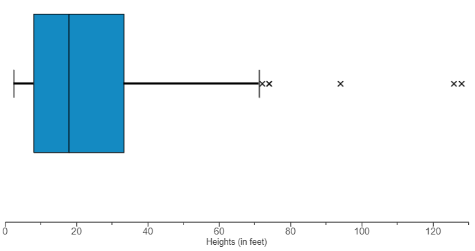
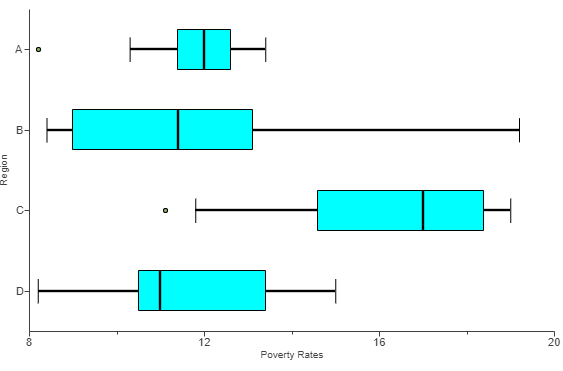
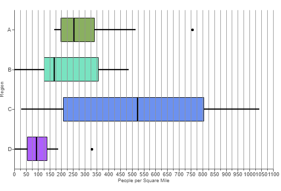
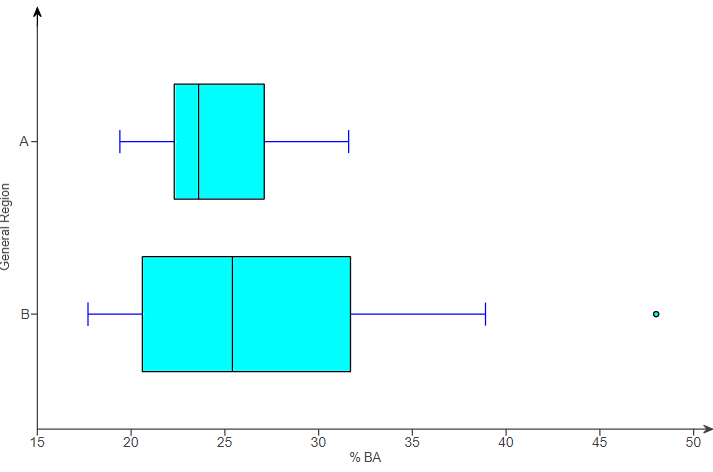
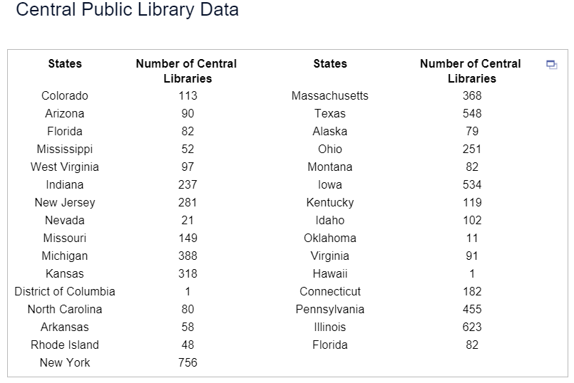
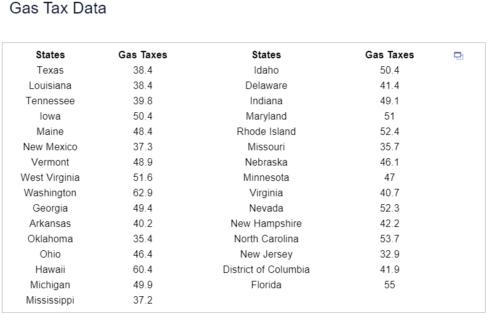
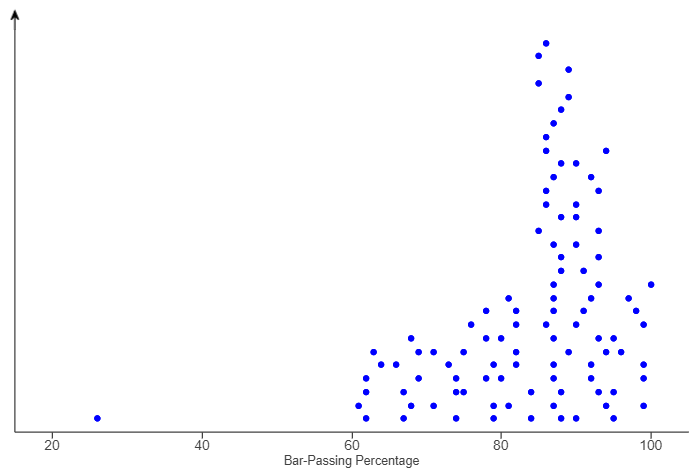
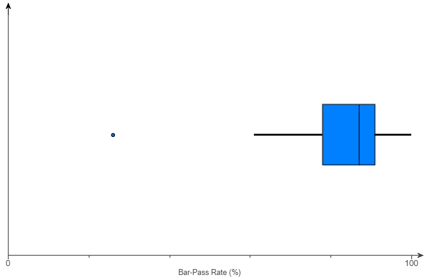

For ACT Students
The ACT is a timed exam...60 questions for 60 minutes
This implies that you have to solve each question in one minute.
Some questions will typically take less than a minute a solve.
Some questions will typically take more than a minute to solve.
The goal is to maximize your time. You use the time saved on those questions you
solved in less than a minute, to solve the questions that will take more than a minute.
So, you should try to solve each question correctly and timely.
So, it is not just solving a question correctly, but solving it correctly on time.
Please ensure you attempt all ACT questions.
There is no negative penalty for any wrong answer.
For SAT Students
Any question labeled SAT-C is a question that allows a calculator.
Any question labeled SAT-NC is a question that does not allow a calculator.
For JAMB Students
Calculators are not allowed. So, the questions are solved in a way that does not require a calculator.
For WASSCE Students
Any question labeled WASCCE is a question for the WASCCE General Mathematics
Any question labeled WASSCE-FM is a question for the WASSCE Further Mathematics/Elective Mathematics
For NSC Students For the Questions:
Any space included in a number indicates a comma used to separate digits...separating multiples of three digits
from behind.
Any comma included in a number indicates a decimal point. For the Solutions:
Decimals are used appropriately rather than commas
Commas are used to separate digits appropriately.
Solve all questions.
Show all work.
(1.) Students A, B, C, D, and E had their SAT (Scholastic Assessment Test) scores
converted
to z-scores.
Their z-scores are −2.00, −1.00, 0.00, 1.00, and 2.00 respectively.
Who made the highest of the five scores?
Student $E$ made the highest test score because the score is $2.00$ standard deviations above the
mean.
(2.) Two friends Agnes and Agatha were arguing on who made the better score.
Agnes made a 73% on her Chemistry test while Agatha made a 46% on her Biology test.
The Biology test scores have a mean of 65% and a standard deviation of 10%, while the Chemistry
test scores have a mean of 95% and a standard deviation of 11%.
Who made the better score?
$
z = \dfrac{x - \mu}{\sigma} \\[5ex]
\underline{Agnes'\:\:Chemistry\:\:Test} \\[3ex]
x = 73 \\[3ex]
\mu = 95 \\[3ex]
\sigma = 11 \\[3ex]
z = \dfrac{73 - 95}{11} \\[5ex]
z = -\dfrac{22}{11} \\[5ex]
z = -2.00 \\[3ex]
\underline{Agatha's\:\:Biology\:\:Test} \\[3ex]
x = 46 \\[3ex]
\mu = 65 \\[3ex]
\sigma = 10 \\[3ex]
z = \dfrac{46 - 65}{10} \\[5ex]
z = -\dfrac{19}{10} \\[5ex]
z = -1.90 \\[3ex]
-1.90 \gt -2.00 \\[3ex]
$
Therefore, Agatha's Biology test score is better because it has a higher $z-score$ than Agnes'
Chemistry test score.
Note the responses of your students.
If some of them said that Agnes' test score was better, re-teach the concept of $z-scores$
(3.) IQ (Intelligence Quotient) scores are measured with a test designed so that the mean is 107 and the
standard
deviation is 19.
(a.) What are the z-scores that separate the unusual IQ scores from the usual IQ scores?
(b.) What are the IQ scores that separate the unusual IQ scores from the usual IQ scores?
(a.) A data score is usual if $-2.00 \le z \le 2.00$
A data value is unusual if the $z-score \lt -2.00$ OR the $z-score \gt 2.00$
The lower $z-score$ boundary is $-2.00$
The upper $z-score$ boundary is $2.00$
This implies that $-2.00$ and $2.00$ are the $z-scores$ that separate the unusual $IQ$ scores
from the usual $IQ$ scores
(b.) To find the $IQ$ scores (data values), we need to express them in terms of the $z-scores$.
$
z = \dfrac{x - \mu}{\sigma} \\[5ex]
\rightarrow x - \mu = z\sigma \\[3ex]
x = z\sigma + \mu \\[3ex]
Lower\:\:IQ\:\:score\:\:boundary = -2(19) + 107 = -38 + 107 = 69 \\[3ex]
Upper\:\:IQ\:\:score\:\:boundary = 2(19) + 107 = 38 + 107 = 145 \\[3ex]
Usual\:\:IQ\:\:scores:\:\: 69 \le IQ \le 145 \\[3ex]
Unusual\:\:IQ\:\:scores:\:\: IQ \lt 69 \:\:OR\:\: IQ \gt 145 \\[3ex]
$
Therefore 69 and 145 are the IQ scores that separate the unusual IQ scores
from the usual IQ scores
(4.) At one time, President Barack Obama had a net worth of 3,670,505.00
The 17 members of the Executive Branch had a mean net worth of 4,939,455.00 with a standard
deviation of 7,775,948.00 (OpenSecrets.org)
(a.) What is the difference between the mean net worth of all the Executive Branch members and President
Obama's net worth?
(b.) How many standard deviations is the difference?
(c.) What are the z-score of President Obama's net worth?
(d.) Is President Obama's net worth usual or unusual?
(5.) Timothy surveyed 36 adults in the City of Truth or Consequences, New Mexico.
He sorted their ages (in years) as seen in the data below:
Ages
18
20
20
22
23
25
27
30
31
32
36
37
38
40
40
41
43
44
48
49
49
55
56
58
61
63
63
65
69
70
70
70
71
76
77
80
Determine and interpret the quantiles of 65 years.
Sample size = total number of values = n = 36
Number of data values less than 65 = 27
$
Percentile\;\;of\;\;65 \\[3ex]
= \dfrac{27}{36} * 100 \\[5ex]
= \dfrac{2700}{36} \\[5ex]
= 75th\;\;percentile \\[3ex]
$
This means that 75% of the ages are lower than 65 years while 25% of the ages are higher than 65
years.
Alternatively, we can say that if the ages is divided into 100 parts; the age, 65 years separates
the lowest 75% of the ages from the highest 25%.
$
Decile\;\;of\;\;65 \\[3ex]
= \dfrac{27}{36} * 10 \\[5ex]
= \dfrac{270}{36} \\[5ex]
= 7.5th\;\;decile \\[3ex]
$
If the ages dataset is divided in 10 parts, 65 years separates the lowest 7.5 of the ages from the
highest 2.5.
$
Quintile\;\;of\;\;65 \\[3ex]
= \dfrac{27}{36} * 5 \\[5ex]
= \dfrac{135}{36} \\[5ex]
= 3.75th\;\;quintile \\[3ex]
$
If the ages dataset is divided in 5 parts, 65 years separates the lowest 3.75 of the ages from the
highest 1.25.
$
Quartile\;\;of\;\;65 \\[3ex]
= \dfrac{27}{36} * 4 \\[5ex]
= \dfrac{108}{36} \\[5ex]
= 3rd\;\;quartile \\[3ex]
$
If the ages dataset is divided in 4 parts, 65 years separates the lowest 3 of the ages from the
highest 1.
(6.) Using the Ages dataset in Question Number (5.), determine the: 75th percentile, 7.5th
decile, 3.75th quintile, and the 3rd quartile.
Student: Mr. C, are we not supposed to get 65 as the answer? Teacher: Yes. But we got 64. This is the correct answer.
I want you to see it this way: 64 is the boundary for the 3rd quartile (75th percentile)
65 is included in that part. But 64 is the boundary.
Be it as it may: please NOTE: Some textbooks/online resources calculate these formulas
(formulas that deal with converting a quantile to a data value)
differently.
They may have it this way:
$
xth\:\:position = \dfrac{yth\:\:Percentile}{100} * (total\:\:number\:\:of\:\:values + 1) \\[5ex]
$
If we use this formula, we will get the answers we got in Question Number (5.) (which we makes
sense).
However, if we decide to calculate the median of that data with this formula, it will be
different from the median value calculated with the formulas in the link above (main formulas).
There is still some confusion that the main formulas should only apply to the median.
Be it as it may, please use the main formulas (which is provided for you on the tests/exams)
(7.) Data were collected on the total energy consumption per capita (in million BTUs) for some states.
A summary of the data is shown in the table below.
Summary Statistics:
Column
Min
Q1
Median
Q3
Max
Total BTU
185.5
242.9
304.7
392.8
912.7
(a.) What percentage of the states consumed more than 392.8 million BTUs per capita?
(b.) What percentage of the states consumed more than 242.9 million BTUs per capita?
(c.) What percentage of the states consumed more than 304.7 million BTUs per capita?
(d.) Determine the interquartile range.
(e.) Interpret the interquartile range in the context of the dataset.
(a.) 392.8 million BTU = Q3 = 75%
More than 75% = 100% = 75% = 25%
25% of the states consumed more than 392.8 million BTUs per capita.
(b.) 242.9 million BTUs = Q1 = 25%
More than 25% = 100% - 25% = 75%
75% of the states consumed more than 242.9 million BTUs per capita.
(c.) 304.7 million BTUs = Q2 = Median = 50%
More than 50% = 100% - 50% = 50%
50% of the states consumed more than 304.7 million BTUs per capita.
$
(d.) \\[3ex]
IQR = Q_3 - Q_1 \\[3ex]
IQR = 392.8 - 242.9 = 149.9\;million\;BTUs \\[3ex]
$
(e.) Interpretation of IQR: The middle 50% of the states have values of total energy consumption
per capita that vary by as much 149.9 million BTUs.
(8.) ACT For a given set of data, the standard score, z, corresponding to the raw score,
x, is given by
$z = \dfrac{x - \mu}{\sigma}$, where μ is the mean of the set and σ is the standard deviation.
If, for a set of scores, μ = 78 and σ = 6, which of the following is the raw score, x,
corresponding to
z = 2?
$
\mu = 78 \\[3ex]
\sigma = 6 \\[3ex]
z = 2 \\[3ex]
x = ? \\[3ex]
z = \dfrac{x - \mu}{\sigma} \\[5ex]
x - \mu = z * \sigma \\[3ex]
x = z * \sigma + \mu \\[3ex]
x = 2 * 6 + 78 \\[3ex]
x = 12 + 78 \\[3ex]
x = 90
$
(9.) The boxplot displayed shows the average ticket price for four professional sports leagues.

(a.) Which sport has the most expensive ticket prices?
(b.) Which sport has the least expensive ticket prices?
(c.) Compare the ticket prices for Sport A and Sport B.
In your comparison, compare the price of a typical ticket, the amount of variation in ticket prices,
and the presence of any outliers in the data.
(a.) The sport with the most expensive ticket prices is Sport C because it has the greatest maximum
ticket price.
(b.) The sport with the most expensive ticket prices is Sport D because it has the least minimum
ticket price.
(c.) A typical ticket for Sport A is less expensive than a typical ticket for Sport B, since Sport
A has a lower median than Sport B.
Sport B has more variability in ticket prices, as shown by a higher IQR (the length of the
box...without the whiskers).
Sport A has potential outliers representing unusually high-priced tickets.
Sport B has potential outliers representing unusually high-priced tickets.
(10.) Determine the five-number summary for the dataset
(11.) The dotplot shows the distribution of the heights (in feet) of a sample of roller coasters.

The five-number summary of the data is given in the following table.
Minimum
Lower Quartile
Median
Upper Quartile
Maximum
2.393
8.009
18.086
33.313
129.414
(a.) Sketch a boxplot of the data.
(b.) Explain how you determined the length of the whiskers.
(a.) The sketch of the boxplot is:

$
(b.) \\[3ex]
Q_1 = 8.009 \\[3ex]
Q_3 = 33.313 \\[3ex]
IQR = Q_3 - Q_1 \\[3ex]
IQR = 33.313 - 8.009 \\[3ex]
IQR = 25.304 \\[3ex]
LF = Q_1 - 1.5IQR \\[3ex]
LF = 8.009 - 1.5(25.304) \\[3ex]
LF = 8.009 - 37.956 \\[3ex]
LF = -29.947 \\[5ex]
UF = Q_3 + 1.5IQR \\[3ex]
UF = 33.313 + 37.956 \\[3ex]
UF = 71.269 \\[3ex]
$
The length of the whiskers is determined as follows:
The minimum value is greater than or equal to the left limit (lower fence) of −29.947, so the
left whisker is drawn to the minimum.
The maximum value is greater than the right limit (upper fence) of 71.269, so the right whisker is
drawn to the largest non-outlier.
(12.)
(13.) Determine the five-number summary for the dataset
(14.) Given these datasets, determine whether the boxplot can be used to represent the dataset.
Give reasons for your answers.
(a.) 44, 78, 80, 87, 95
(b.) 51, 72, 80, 86, 100
First, let us list the five-number summary
Then, we calculate the lower fence and upper fence
Then, we make our decision based on the comparing the minimum and the lower fence and/or the maximum
and upper fence.
$
(a.) \\[3ex]
44, 78, 80, 87, 95 \\[3ex]
minimum = 44 \\[3ex]
Q_1 = 78 \\[3ex]
Q_2 = 80 \\[3ex]
Q_3 = 87 \\[3ex]
maximum = 95 \\[3ex]
IQR = Q_3 - Q_1 \\[3ex]
IQR = 87 - 78 = 9 \\[3ex]
1.5IQR = 1.5(9) = 13.5 \\[3ex]
LF = Q_1 - 1.5IQR \\[3ex]
LF = 78 - 13.5 = 64.5 \\[3ex]
44 \lt 64.5 \\[3ex]
$
The minimum value is less than the lower fence.
Between the minimum value and the lower fence, there may be some values greater than the minimum but
less than the lower fence.
These values are unknown outliers.
Hence, the boxplot cannot be drawn for this dataset because the boxplot must mark all potential
outliers.
Since the minimum is lower than the left limit, there may be other unknown outliers between the
minimum and left limit, and so the boxplot cannot mark all potential outliers.
$
(b.) \\[3ex]
51, 72, 80, 86, 100 \\[3ex]
minimum = 51 \\[3ex]
Q_1 = 72 \\[3ex]
Q_2 = 80 \\[3ex]
Q_3 = 86 \\[3ex]
maximum = 100 \\[3ex]
IQR = Q_3 - Q_1 \\[3ex]
IQR = 86 - 72 = 14 \\[3ex]
1.5IQR = 1.5(14) = 21 \\[3ex]
LF = Q_1 - 1.5IQR \\[3ex]
LF = 72 - 21 = 51 \\[3ex]
51 = 51 \\[3ex]
$
The minimum is the lower fence.
So, there are no unknown outliers based on the lower fence.
Let us compare the maximum with the upper fence.
$
UF = Q_3 + 1.5IQR \\[3ex]
UF = 86 + 21 = 107 \\[3ex]
$
The maximum is lower than the upper fence.
This is in order because there is no other value in the dataset greater than the maximum.
It is possible to draw a boxplot based on this information.
Both the minimum and maximum are within the bounds of the left limit and right limit, which means
that all potential outliers can be displayed.
This is necessary to construct the boxplot.
(15.) Data were collected on the industrial energy consumption per capita (in million BTUs) for some
states.
A summary of the data is shown in the table below.
Summary Statistics:
Column
Min
Q1
Median
Q3
Max
Industrial BTU
10.7
43.7
94.9
140.6
620.8
(a.) What percentage of the states consumed fewer than 43.7 million BTUs per capita?
(b.) What percentage of the states consumed fewer than 140.6 million BTUs per capita?
(c.) What percentage of the states consumed more than 94.9 million BTUs per capita?
(d.) Is there more variability in Total Energy Consumption or in Industrial Energy Consumption for the
states?
Summary Statistics:
Column
Min
Q1
Median
Q3
Max
Total BTU
189
228.4
305.4
380.4
914.5
(See the table below for data on total energy consumption per capita (in millions of BTUs) for the
states.)
(a.) 43.7 million BTUs = Q1 = 25%
25% of the states consumed fewer than 43.7 million BTUs per capita.
(b.) 140.6 million BTUs = Q3 = 75%
75% of the states consumed fewer than 140.6 million BTUs per capita.
(c.) Median = 94.9 million BTU = 50%
More than 50% = 100 - 50% = 50%
50% of the states consumed more than 94.9 million BTUs per capita.
$
(d.) \\[3ex]
\underline{Industrial\;\;BTU} \\[3ex]
IQR = Q_3 - Q_1 \\[3ex]
IQR = 140.6 - 43.7 = 96.9\;million\;BTUs \\[5ex]
\underline{Total\;\;BTU} \\[3ex]
IQR = Q_3 - Q_1 \\[3ex]
IQR = 380.4 - 228.4 = 152\;million\;BTUs \\[5ex]
152\;million\;BTUs \gt 96.9\;million\;BTUs \\[3ex]
$
There is more variability in Total Energy Consumption because it has an interquartile range of 152
million BTUs versus an interquartile range for Industrial Energy Consumption of 96.9 million BTUs.
(16.)
(17.) The boxplot shows the poverty rates (the proportion of the population below the government's
official poverty level) in all states of a certain country.
The states are divided into four geographical regions: A, B, C, and D.

(a.) List the regions from highest to lowest median poverty rate.
(b.) List the regions from lowest to highest interquartile range.
(c.) Do any of the regions have a state with an unusually low or an unusually high poverty rate?
Explain.
(d.) Which region has the least amount of variability in poverty rate? Explain.
(e.) Why is the interquartile range a better measure of the variability for these data than the range
is?
Scale:
$
\dfrac{12 - 8}{2} = \dfrac{4}{2} = 2 \\[5ex]
8, 10, 12, 14, 16, 18, 20 \\[3ex]
$
(a.) Minimum Poverty Rates:
A = about 10.2
B = about 8.4
C = about 11.8
D = about 8.2
The regions from highest to lowest median poverty rate are: C, A, B, D
(b.) Interquartile Range is the length of the box: (approximate lengths are calculated)
$
IQR = Q_3 - Q_1 \\[3ex]
A = 13 - 11 = 2 \\[3ex]
B = 12.8 - 8.4 = 4.4 \\[3ex]
C = 18.2 - 14.4 = 3.8 \\[3ex]
D = 13.7 - 10.4 = 3.3 \\[3ex]
$
The regions from lowest to highest interquartile range are: A, D, C, B
(c.) An unusually low or an unusually high poverty rate is an outlier.
Region A has a state with an unusually low poverty rate.
Region B has no state with an unusually low or high poverty rate.
Region C has a state with an unusually low poverty rate.
Region D has no state with an unusually low or high poverty rate.
Regions that have states with unusually low poverty rates have dots on the left side of their
boxplots.
Regions that have states with unusually high poverty rates have dots on the right side of their
boxplots.
(d.) Region A has the least amount of variability because it has the lowest interquartile range.
(e.) The range depends on only two observations, while the interquartile range depends on many
observations and is therefore more reliable.
(18.)
(19.)
(20.) WASSCE In a community of 500 people, the 75th percentile age is 65 years while the 25th
percentile
age is 15 years.
How many of the people are between 15 and 65 years?
(21.) The figure shows population density (people per square mile) for all states of a certain
country.

The states are divided into four geographical regions: A, B, C, and D.
(a.) Why is it best to compare medians and interquartile ranges for these data, rather than comparing
means and standard deviations?
(b.) List the approximate median number of people per square mile for each location; for example, the
median for Region A is approximately 255
(c.) List the regions from lowest interquartile range (on the left) to highest.
(a.) Some of these data have outliers and/or are skewed, and the median and interquartile range
are resistant to outliers.
(b.) Scale on the x-axis:
$
\dfrac{50 - 0}{2} = \dfrac{50}{2} = 25 \\[5ex]
$
The median for Region B (between 150 and 175) is about 170 people per square mile.
The median for Region C (between 500 and 525) is about 520 people per square mile.
The median for Region D (between 75 and 100) is about 95 people per square mile.
(c.) Interquartile Range is the length of the box: (approximate lengths are calculated)
$
IQR = Q_3 - Q_1 \\[3ex]
A = 13 - 11 = 2 \\[3ex]
B = 12.8 - 8.4 = 4.4 \\[3ex]
C = 18.2 - 14.4 = 3.8 \\[3ex]
D = 13.7 - 10.4 = 3.3 \\[3ex]
$
The regions from lowest to highest interquartile range are: A, D, C, B
(22.)
(23.)
(24.)
(25.) The boxplot shows the percentage of the population that has earned a bachelor's (BA) degree in
two different regions of a country.

(a.) Estimate and interpret the median for Region A.
(b.) Estimate and interpret the median for Region B.
(c.) In which region does a greater percentage of the population have a BA degree?
(d.) Which region has more variation in BA attainment?
(a.) The median BA percentage for Region A is approximately is 23.6
(b.) The median BA percentage for Region B is approximately is 25.4
(c.) A greater percentage of the population has a BA degree in Region B because the median is larger
for Region B.
(d.) Region B has greater variation than Region A because the interquartile range (IQR) for Region A
is less than that for Region B.
(26.)
(27.) HSC Mathematics Standard 1 The heights, in centimetres, of 10 players on a basketball team
are shown.
170, 180, 185, 188, 192, 193, 193, 194, 196, 202
Is the height of the shortest player on the team considered an outlier?
Justify your answer with calculations.
Fences: Lower Fence and Upper Fence determine outliers of data.
A data value is an outlier if it is less than the lower fence or greater than the upper fence.
Because the question asked for the height of the shortest player, we shall be concerned with only
the Lower Fence.
Data is already sorted
$
n = 10 \\[3ex]
\dfrac{1}{4} * 10 \\[5ex]
= 2.5th \approx 3rd\;\;position \\[3ex]
Q_1 = 185 \\[5ex]
\dfrac{3}{4} * 10 \\[5ex]
= 7.5th \approx 8th\;\;position \\[3ex]
Q_3 = 194 \\[5ex]
IQR = Q_3 - Q_1 \\[3ex]
IQR = 194 - 185 \\[3ex]
IQR = 9 \\[3ex]
LF = Q_1 - 1.5(IQR) \\[3ex]
LF = 185 - 1.5(9) \\[3ex]
LF = 185 - 13.5 \\[3ex]
LF = 171.5 \\[3ex]
$
Because the height of the shortest player is 170 cm and 170 < 171.5; the height of the shortest
player is an outlier.
(28.)
(29.)
(30.)
(31.) The data show the number of central public libraries in 30 states and the District of Columbia.

A summary of the data is shown in the following table.
Summary Statistics
Variable
n
Mean
Std. Dev.
Median
Minimum
Maximum
Q1
Q3
Central Public Libraries
31
203.19355
201.46586
102
1
756
79
318
Should the maximum and minimum values of this data set be considered potential outliers? Why or why not?
You can check your answer by using technology to make a boxplot using fences to identify potential outliers.
(a.) Should the maximum value of this data set be considered a potential outlier?
Why or why not?
(b.) Should the minimum value of this data set be considered a potential outlier?
Why or why not?
$
(a.) \\[3ex]
IQR = Q_3 - Q_1 \\[3ex]
IQR = 318 - 79 \\[3ex]
IQR = 239 \\[3ex]
UF = Q_3 + 1.5IQR \\[3ex]
UF = 318 + 1.5(239) \\[3ex]
UF = 318 + 358.5 \\[3ex]
UF = 676.5 \\[3ex]
Maximum = 756 \\[3ex]
756 \gt 676.5 \\[3ex]
$
Because the maximum value, 756 is greater than the upper fence (right limit), 676.5, the value is
considered a potential outlier.
$
(b.) \\[3ex]
LF = Q_1 - 1.5IQR \\[3ex]
LF = 79 - 1.5(239) \\[3ex]
LF = 79 - 358.5 \\[3ex]
LF = -279.5 \\[3ex]
Minimum = 1 \\[3ex]
-279.5 \lt 1 \\[3ex]
$
Because the minimum value, 1 is greater than the lower fence (left limit), -279.5, the value is not
considered a potential outlier.
(32.) The data show the gas taxes in 30 states and the District of Columbia.

A summary of the data is shown in the following table.
Summary Statistics
Column
n
Std. Dev.
Median
Min
Max
Q1
Q3
Gas Taxes (ct/gal)
31
7.46543
47
32.9
62.9
39.8
51
Should the maximum and minimum values of this data set be considered potential outliers? Why or why not?
You can check your answer by using technology to make a boxplot using fences to identify potential outliers.
(a.) Should the maximum value of this data set be considered a potential outlier?
Why or why not?
(b.) Should the minimum value of this data set be considered a potential outlier?
Why or why not?
$
(a.) \\[3ex]
IQR = Q_3 - Q_1 \\[3ex]
IQR = 51 - 39.8 \\[3ex]
IQR = 11.2 \\[3ex]
UF = Q_3 + 1.5IQR \\[3ex]
UF = 51 + 1.5(11.2) \\[3ex]
UF = 51 + 16.8 \\[3ex]
UF = 67.8 \\[3ex]
Maximum = 62.9 \\[3ex]
62.9 \lt 67.8 \\[3ex]
$
Because the maximum value, 62.9 is less than the upper fence (right limit), 67.8, the value is not
considered a potential outlier.
$
(b.) \\[3ex]
LF = Q_1 - 1.5IQR \\[3ex]
LF = 39.8 - 1.5(11.2) \\[3ex]
LF = 39.8 - 16.8 \\[3ex]
LF = 23 \\[3ex]
Minimum = 32.9 \\[3ex]
32.9 \gt 23 \\[3ex]
$
Because the minimum value, 32.9 is greater than the lower fence (left limit), 23, the value is not
considered a potential outlier.
(33.)
(34.)
(35.) The dotplot shows the distribution of passing rates for the bar exam at 185 law schools in the
United States in a certain year.

The five number summary is 26, 78, 87, 91, 100.
(a.) Draw a boxplot of the data.
(b.) Explain how you determined where the whiskers go.
(a.) The sketch of the boxplot is:

$
(b.) \\[3ex]
Q_1 = 78 \\[3ex]
Q_3 = 91 \\[3ex]
IQR = Q_3 - Q_1 \\[3ex]
IQR = 91 - 78 \\[3ex]
IQR = 13 \\[3ex]
LF = Q_1 - 1.5IQR \\[3ex]
LF = 78 - 1.5(13) \\[3ex]
LF = 78 - 19.5 \\[3ex]
LF = 58.5 \\[5ex]
UF = Q_3 + 1.5IQR \\[3ex]
UF = 91 + 19.5 \\[3ex]
UF = 110.5 \\[3ex]
$
The whiskers extend to the most extreme values that are not potential outliers.
The left whisker extends to the smallest observation that is greater than or equal to 58.5, and the
right whisker extends to the largest observation that is less than or equal to 110.5